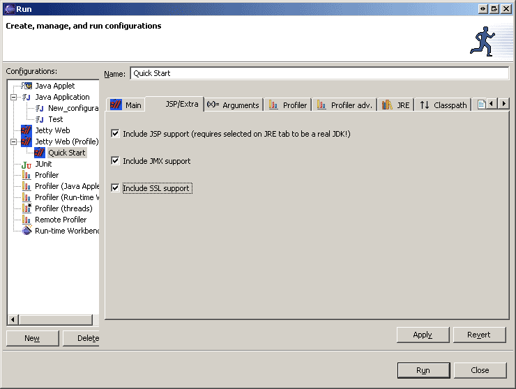

To use JSPs, or the support built into Jetty for JMX and SSL, users should visit "JSP" tab.

On this tab there are 3 options, when each is selected certain jars files are automatically added to the classpath. These additions can be viewed on the Classpath tab.
The options are:
You can view/modify the changes the plugin makes on the Classpath tab.
Note that the VM selected in the JRE tab must be a true JDK and not merely a JRE. You can add a JDK as an option by opening Windows->Preferences->Java->Installed JREs. Once you add the JDK, you can select it in on the JRE tab